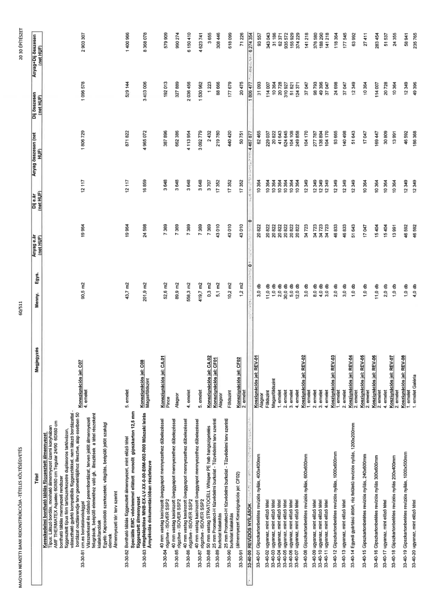

| Tétel | Megjegyzés | Menny. | Egys. | Anyag e.ár (net HUF) | Díj e.ár (net HUF) | Anyag összesen (net HUF) | Díj összesen (net HUF) | Anyag+Díj összesen (net HUF) |
|---|---|---|---|---|---|---|---|---|
| 33-30-81 Kereskedelmi bontható táblás függesztett álmennyezet Típus: Látszó bordás, mosható álmennyezet üzemi konyhában AMF THERMATEX Aquatec 60x60 cm Tegular 24/90 60X60 cm bontható táblás mennyezeti rendszer függesztett típus fém tartószerkezetre duplasoros tartóvázon, választható gyártó kompatibilis függesztékkel, nem látszó bordázattal - bordázat osztásrendje terv geometriájához illesztve, alap esetben 50 cm.es bordatávolsággal Vázszerkezet és oldalsó perembordázat, terven jelölt álmennyezeti felugrások, beépülő elemekhez való gk. illesztések a tétel részeként kialakítandók Egyéb: Kapcsolódó szerkezetek: világítás, beépülő jelölt szakági elemek Álmennyezeti tér: terv szerint | Konszignációs jel: C07 4. emelet | 90,5 | m2 | 19 964 | 12 117 | 1 806 729 | 1 096 578 | 2 903 307 |
| 33-30-82 Bontható táblás függesztett álmennyezet, mint előző tétel | Konszignációs jel: C08 5. emelet | 43,7 | m2 | 19 964 | 12 117 | 871 822 | 529 144 | 1 400 966 |
| 33-30-83 Speciális EMC védelemmel ellátott monolit gipszkarton 12,5 mm függesztett álmennyezet rétegfelépítése MNB-EX-LV-XX-A-00-E0M-002-R00 Műszaki leírás Árnyékolás dokumentációban részletezve | Konszignációs jel: C08 Magasföldszint | 201,9 | m2 | 24 598 | 16 859 | 4 965 072 | 3 403 006 | 8 368 078 |
| 33-30-84 40 mm vastag kasírozott üveggyapot mennyezethez dűbelezéssel rögzítve - ISOVER SSP2 | Konszignációs jel: CA.01 Pince | 52,6 | m2 | 7 369 | 3 648 | 387 896 | 192 013 | 579 909 |
| 33-30-85 ugyanaz | Alagsor | 89,9 | m2 | 7 369 | 3 648 | 662 386 | 327 889 | 990 274 |
| 33-30-86 ugyanaz | 4. emelet | 558,3 | m2 | 7 369 | 3 648 | 4 113 954 | 2 036 456 | 6 150 410 |
| 33-30-87 ugyanaz | 5. emelet | 419,7 | m2 | 7 369 | 3 648 | 3 092 779 | 1 530 962 | 4 623 741 |
| 33-30-88 50 mm vastag STRATOCELL Whisper PE hab hangszigetelés | Konszignációs jel: CA.02 | 0,3 | m2 | 7 369 | 3 707 | 2 432 | 1 223 | 3 655 |
| 33-30-89 25 mm Promat-H tűzvédelmi burkolat - Tűzvédelmi terv szerinti burkolat kialakítás | Konszignációs jel: CF01 Alagsor | 5,1 | m2 | 43 010 | 17 352 | 219 780 | 88 666 | 308 446 |
| 33-30-90 ugyanaz | Földszint | 10,2 | m2 | 43 010 | 17 352 | 440 420 | 177 679 | 618 099 |
| 33-30-91 ugyanaz (álmennyezet Konszignációs jel: CF02) | Konszignációs jel: CF02 2. emelet | 1,2 | m2 | 43 010 | 17 352 | 50 751 | 20 475 | 71 226 |
| 33-40-00 REVIZÍOS NYÍLÁSOK | 0 | 0 | 0 | 0 | 0 | 4 467 877 | 1 806 477 | 6 274 354 |
| 33-40-01 Gipszkartonbetétes revíziós nyílás, 400x400mm | Konszignációs jel: REV-01 Alagsor | 3,0 | db | 20 822 | 10 364 | 62 465 | 31 093 | 93 557 |
| 33-40-02 ugyanaz, mint előző tétel | Földszint | 11,0 | db | 20 822 | 10 364 | 229 037 | 114 007 | 343 043 |
| 33-40-03 ugyanaz, mint előző tétel | Magasföldszint | 1,0 | db | 20 822 | 10 364 | 20 822 | 10 364 | 31 186 |
| 33-40-04 ugyanaz, mint előző tétel | 1. emelet | 2,0 | db | 20 822 | 10 364 | 41 643 | 20 728 | 62 371 |
| 33-40-05 ugyanaz, mint előző tétel | 2. emelet | 30,0 | db | 20 822 | 10 364 | 624 645 | 310 927 | 935 572 |
| 33-40-06 ugyanaz, mint előző tétel | 3. emelet | 5,0 | db | 20 822 | 10 364 | 104 108 | 51 821 | 155 929 |
| 33-40-07 ugyanaz, mint előző tétel | 4. emelet | 12,0 | db | 20 822 | 10 364 | 249 858 | 124 371 | 374 229 |
| 33-40-08 Gipszkartonbetétes revíziós nyílás, 600x600mm | Konszignációs jel: REV-02 1. emelet | 3,0 | db | 34 723 | 12 349 | 104 170 | 37 047 | 141 218 |
| 33-40-09 ugyanaz, mint előző tétel | 2. emelet | 8,0 | db | 34 723 | 12 349 | 277 787 | 98 793 | 376 580 |
| 33-40-10 ugyanaz, mint előző tétel | 3. emelet | 4,0 | db | 34 723 | 12 349 | 138 894 | 49 396 | 188 290 |
| 33-40-11 ugyanaz, mint előző tétel | 4. emelet | 3,0 | db | 34 723 | 12 349 | 104 170 | 37 047 | 141 218 |
| 33-40-12 Gipszkartonbetétes revíziós nyílás, 1000x600mm | Konszignációs jel: REV-03 1. emelet | 2,0 | db | 46 833 | 12 349 | 93 665 | 24 698 | 118 364 |
| 33-40-13 ugyanaz, mint előző tétel | 2. emelet | 3,0 | db | 46 833 | 12 349 | 140 498 | 37 047 | 177 545 |
| 33-40-14 Egyedi gyártású áttört, réz felületű revíziós nyílás, 1200x200mm | Konszignációs jel: REV-04 2. emelet | 1,0 | db | 51 643 | 12 349 | 51 643 | 12 349 | 63 992 |
| 33-40-15 Gipszkartonbetétes revíziós nyílás, 240x600mm | Konszignációs jel: REV-05 2. emelet | 1,0 | db | 17 047 | 10 364 | 17 047 | 10 364 | 27 411 |
| 33-40-16 Gipszkartonbetétes revíziós nyílás, 300x600mm | Konszignációs jel: REV-06 2. emelet | 11,0 | db | 15 404 | 10 364 | 169 447 | 114 007 | 283 454 |
| 33-40-17 ugyanaz, mint előző tétel | 4. emelet | 2,0 | db | 15 404 | 10 364 | 30 809 | 20 728 | 51 537 |
| 33-40-18 Gipszkartonbetétes revíziós nyílás, 200x400mm | Konszignációs jel: REV-07 2. emelet | 1,0 | db | 13 991 | 10 364 | 13 991 | 10 364 | 24 355 |
| 33-40-19 Gipszkartonbetétes revíziós nyílás, 1000x500mm | Konszignációs jel: REV-08 1. emelet | 1,0 | db | 46 592 | 12 349 | 46 592 | 12 349 | 58 941 |
| 33-40-20 ugyanaz, mint előző tétel | 1. emelet Galéria | 4,0 | db | 46 592 | 12 349 | 186 368 | 49 396 | 235 765 |
